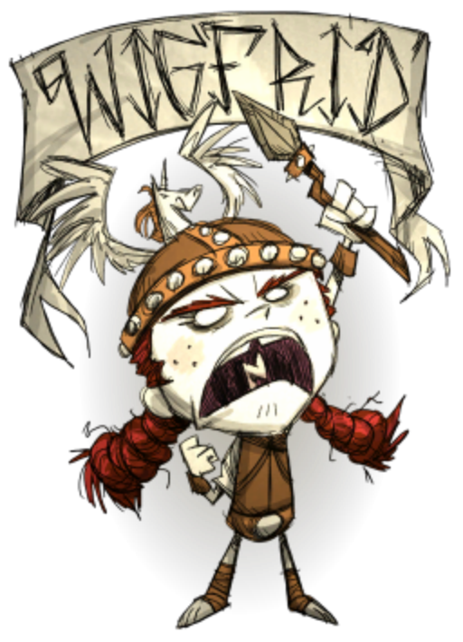

120 120 200
女武神扮演者，自带25%防御和25%攻击加成，杀死敌人后可恢复敌人攻击力25%的血量与精神，只能吃肉或肉制品，武器方面可制作别人做不了的头盔（耐久比猪皮盔高）和战矛。120精神，120饱食度与200生命值。
Wigfrid的缺点是她只吃肉和肉料理。这让她在早期探索时无法利用浆果和胡萝卜存活，也无法食用某些营养的料理（如火龙果派和太妃糖），但是她卓越的战斗能力也可以较轻易地获取肉类。
所以：吃怪兽肉存活可以作为临时的对策，特别是她可由杀害怪物得到失去的健康值和理智值。如果玩家们在早期可以找到猪村，理应可以轻易地杀死猪人，代表一个稳定的肉类来源。如果玩家将四个怪兽肉给猪人吃，那么狂化的猪人就可掉落更多肉和猪皮了。在游戏早期阶段，玩家可以考虑饲养浣熊并利用牠狩猎克列芬象，就可轻易获得肉类。